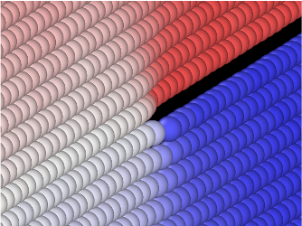
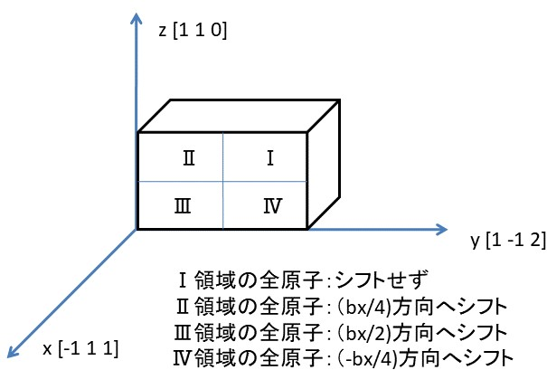
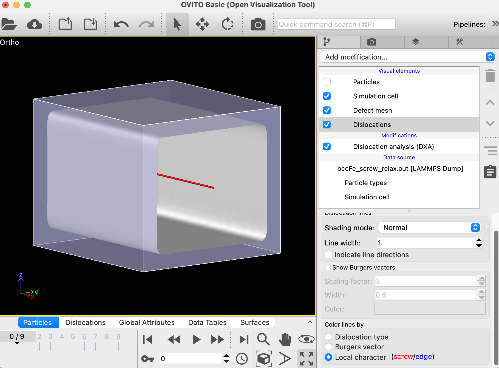

らせん転位を挿入する はじめに
前回の刃状転位を挿入する の講座で学んだ刃状転位と同様に物質の塑性変形や強度に大きく関わっているのがらせん転位である。この講座では、らせん転位を鉄の結晶に挿入する方法を紹介する。Fig 1: 鉄の{111}面にらせん転位が入った時の1結晶面における原子の変位 らせん転位を挿入する方法
よってこのような欠陥を作るにはFig. 1 のように面を切り裂く必要がでてくる。Fig. 2 にあるような直交系とそこに置かれた鉄結晶の直方体を考えよう。この直方体を図にあるようにI からIV までの４つの領域に分割する。全体の領域は衣類を入れるタンスでそれぞれの分割した領域は引き出しと考えよう。前回も学んだがx 方向である<111> 方向には鉄結晶の原子は周期的に並んでいる。その1周期幅のベクトルすなわちバーガーズベクトルをbx とする。それぞれの"引き出し"を図のようにx 方向に移動させて構造緩和させれば最初の図のようなき裂を入れることができ、らせん転位を挿入することができる。「本当にこんなことでらせん転位をつくれるのか？」と疑問に思う方がいるかもしれないが、不思議とこれでうまくいく。Fig. 2: らせん転位挿入法の概念 スクリプトの実行
script ディレクトリにあるbccFe_screw_relax.lcm は上記の方法でらせん転位を鉄結晶に挿入する手順をスクリプトにしたものである。以下のコマンドライン入力で実行する。
$work> lmp_serial -in script/bccFe_screw_relax.lcm
刃状転位の場合と同様に出力されたファイルbccFe_screw_relax.out で計算がうまくいったか確認することができる。刃状転位の場合と同様にOVITOの右側のパネルにおいて"Add Modification"プルダウンメニューからDXAを実行し、"Visual elements"の中の"Particles"のチェックを外し"Dislocations"をハイライトさせる。その下の方にある"Local character (screw /<edge )"を選択すれば得られた転位が赤い線であるので、らせん転位であることが確認できる。下図のような画像が得られれば実行はうまく行ったことになる。Fig. 3: らせん転位挿入MDの結果をOVITOで可視化 x 面すなわち{1 1 1}の結晶面が最初に示した図のように引き裂かれたようになる。引き裂かれた面の変位は上で言ったようにb =1/2<111>となる。これがこのらせん転位のバーガーズベクトルである。よってバーガーズベクトルは前講座の刃状転位の場合と同じになる。Fig. 3 でもわかるように転位線の方向はx 方向すなわち<111>方向でバーガーズベクトルと平行になる（図の左下の座標軸を見よ）。刃状転位の場合はバーガーズベクトルと転位線の方向は直行するので、この点は刃状転位と異なる。
スクリプトの説明
重要な変数の定義
次にスクリプトを見ていくことにする。
variable x_box equal 20
variable y_box equal 20
variable z_box equal 20
variable lc equal 2.83
これはボックスの大きさと格子定数に割り当てられた変数の定義である。
variable vacuum_width equal 1.9
variable vacuum_low equal ${vacuum_width}
variable vacuum_high_z equal ${z_box}-${vacuum_width}
variable vacuum_high_y equal ${y_box}-${vacuum_width}
上の図で説明した引き出しの移動を行うにはyとz方向の境界が束縛されないようにしなくてはならないので、その境界に真空を入れる必要がある。上のスクリプトは真空を入れるために使われる変数を定義している。どう使われるかは後で明らかになる。
基本結晶を作成する
units metal
boundary p p p
atom_style atomic
lattice bcc ${lc} orient x 1 1 1 orient y 1 1 -2 orient z -1 1 0
region box block 0 ${x_box} 0 ${y_box} 0 ${z_box}
create_box 1 box
create_atoms 1 box
このスクリプト部分のはほぼ刃状転位を挿入する と同じだ。
真空層を作る
region lower_vacuum_z block INF INF INF INF INF ${vacuum_low}
delete_atoms region lower_vacuum_z
region upper_vacuum_z block INF INF INF INF ${vacuum_high_z} INF
delete_atoms region upper_vacuum_z
このブロックでは上で述べたようにz 方向の上下に真空を入れている。
region lower_vacuum_y block INF INF INF ${vacuum_low} INF INF
delete_atoms region lower_vacuum_y
region upper_vacuum_y block INF INF ${vacuum_high_y} INF INF INF
delete_atoms region upper_vacuum_y
このブロックでは上ででz 方向で行った境界の処理をy 方向においても行っている。
領域の分割
variable y_box_half equal ${y_box}/2.+0.167
variable z_box_half equal ${z_box}/2.+0.167
region block_one block INF INF ${y_box_half} INF ${z_box_half} INF
region block_two block INF INF INF ${y_box_half} ${z_box_half} INF
region block_three block INF INF INF ${y_box_half} INF ${z_box_half}
region block_four block INF INF ${y_box_half} INF INF ${z_box_half}
ここでは、Fig. 2 のI からIV までの領域を定義している。0.167 は分割する境界が原子位置に重なって不安定な結果にならないようにしている。
group block_one region block_one
group block_two region block_two
group block_three region block_three
group block_four region block_four
そして、それぞれの分割領域（引き出し）にある原子群をgroup として定義する。
"引き出し"の移動
displace_atoms block_one move 0.000 0 0 units lattice
displace_atoms block_two move 0.125 0 0 units lattice
displace_atoms block_three move 0.25 0 0 units lattice
displace_atoms block_four move -0.125 0 0 units lattice
displace_atomsコマンドは指定されたgroup の原子を移動させるコマンドである。ここでは上の図で説明したような距離でそれぞれの”引き出し”の中の原子を移動させる。実はこのブロックの最初の行は原子の移動距離が"0.0 Angstrom"なので不要なのだが、説明をわかり易くするため書いておいた。
構造緩和を行う
pair_style eam/fs
pair_coeff * * ./potentials/Fe_mm.eam.fs Fe
neigh_modify every 1 delay 0 check yes
fix 1 all box/relax iso 0.0 vmax 0.001
thermo 1000
thermo_style custom step pe lx ly lz pxx pyy pzz
dump 1 all custom 100 bccFe_screw_relax.out mass type xs ys zs
min_style cg
minimize 1e-25 1e-12 50000 10000
最後はボックスを構造緩和させて終わりである。
目次へ 前は刃状転位を挿入する 次は転位ループを挿入する